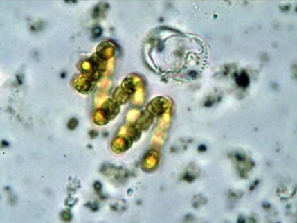
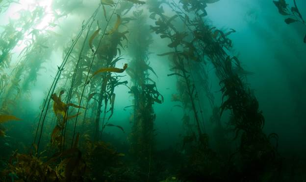
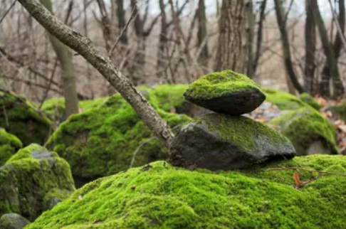
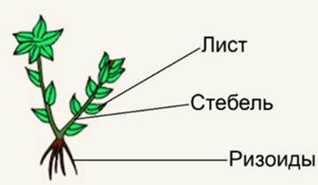
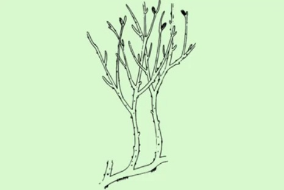
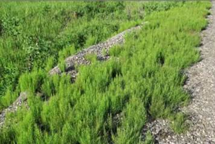
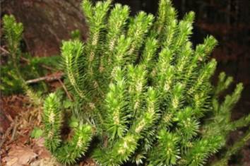

Одни из первых существ на Земле не могли усваивать энергию света, были не способны к фотосинтезу. Фотосинтез – процесс получения энергии и образования органических веществ с помощью солнечного света. По мнению ученых, эти живые существа питались веществами древнего океана, которые были до их появления. Вещества заканчивались из-за их поедания, что привело к появлению существ, которые могли использовать энергию солнечного света для питания. Этими существами были цианобактерии, они относятся к царству бактерий, от них 2,5 млрд лет назад возникли первые растения (рис. 1).

Рис. 1. Цианобактерии (Источник)
Эти бактерии начали выделять кислород в атмосферу, так же как и растения впоследствии. Цианобактерии и растения стали пищей для организмов в биосфере, началом цепочек питания.
2,5 млрд лет назад в морях не было рыб, медуз и других привычных нам морских обитателей, задолго до появления динозавров атмосфера стала наполняться кислородом, практически весь кислород, которым сейчас дышат, образован фотосинтезом растений.
Растения стали развиваться, эволюционировать, начали появляться многоклеточные растения это были еще водоросли (смотри урок «Водоросли»). Начали появляться крупные водоросли, которые прикреплялись к морскому грунту (рис. 2), и в определенный момент они начали осваивать сушу – вышли на нее.

Рис. 2. Пример больших водорослей (Источник)
При выходе водоросли начали развиваться в нескольких направлениях. В одном направлении образовался отдел мохообразных (рис. 3).

Рис. 3. Мох (Источник)
Мхи похожи на водоросли, у них нет корней, к грунту прикрепляются ризоидами (рис. 4), нет возможности экономить питательные вещества, воду, из-за этого они легко высыхают (смотри урок «Мхи»).

Рис. 4. Пример ризоидов (Источник)
Во втором направлении, после выхода на сушу растений, образовался отдел риниофиты. Риниофиты вымерли, о них только можно судить по ископаемым останкам (рис. 5), но дали продолжение живущим на данный момент растениям – отделу папоротникообразных.

Рис. 5. Риниофиты (реконструкция) (Источник)
К ним относят папоротники, хвощи, плауны (рис. 6, 7, 8).
Рис. 6. Папоротники (Источник)

Рис. 7. Хвощи (Источник)

Рис. 8. Плауны (Источник)
Папоротникообразные размножаются спорами, хорошо приспосабливаются к окружающей среде, разнообразны, зависят от воды при размножении (смотри урок «Папоротникообразные»).
Гаметофит споровых растений образует не спермий, а сперматозоид (половая клетка со жгутиком), жгутик, которого может работать только в водной среде, необходима капля воды, чтобы он достиг яйцеклетки.
Семенные растения преодолели зависимость от воды при размножении. У семенных растений – спермий, клетки без жгутиков в отличие от папоротникообразных. Семенные растения – одни из наиболее совершенных представителей царства растений из-за своего разнообразия и сложного устройства. Покрытосеменные растения (цветковые) – венец эволюции царства растений.
На занятии мы рассмотрели самые важные этапы в эволюции растительного царства, от наиболее древних одноклеточных водорослей до отдела цветковых растений. Также перечислили основные отделы растений в порядке появления во время эволюции.
Список литературы
1. Биология. Бактерии, грибы, растения. 6 кл.: учеб. для общеобразоват. учреждений / В.В. Пасечник. – 14-е изд., стереотип. – М.: Дрофа, 2011. – 304 с.: ил.
2. Тихонова Е.Т., Романова Н.И. Биология 6. – М.: Русское слово.
3. Исаева Т.А., Романова Н.И. Биология 6. – М.: Русское слово.
Дополнительные рекомендованные ссылки на ресурсы сети Интернет
1. Интернет-сайт beaplanet.ru (Источник)
2. Интернет-сайт biology.ru (Источник)
3. Интернет-сайт o-planete.ru (Источник)
4. Интернет-сайт "Науколандия" (Источник)
Домашнее задание
1. Исходя из способа размножения папоротникообразных, проанализируйте, в каких местах они лучше всего растут.
2. Как назывались существа, которые могли использовать энергию солнечного света для питания?
3. Изучите материал о завоевании растениями суши http://biology.ru/textbook/chapter4/section1/paragraph1/.